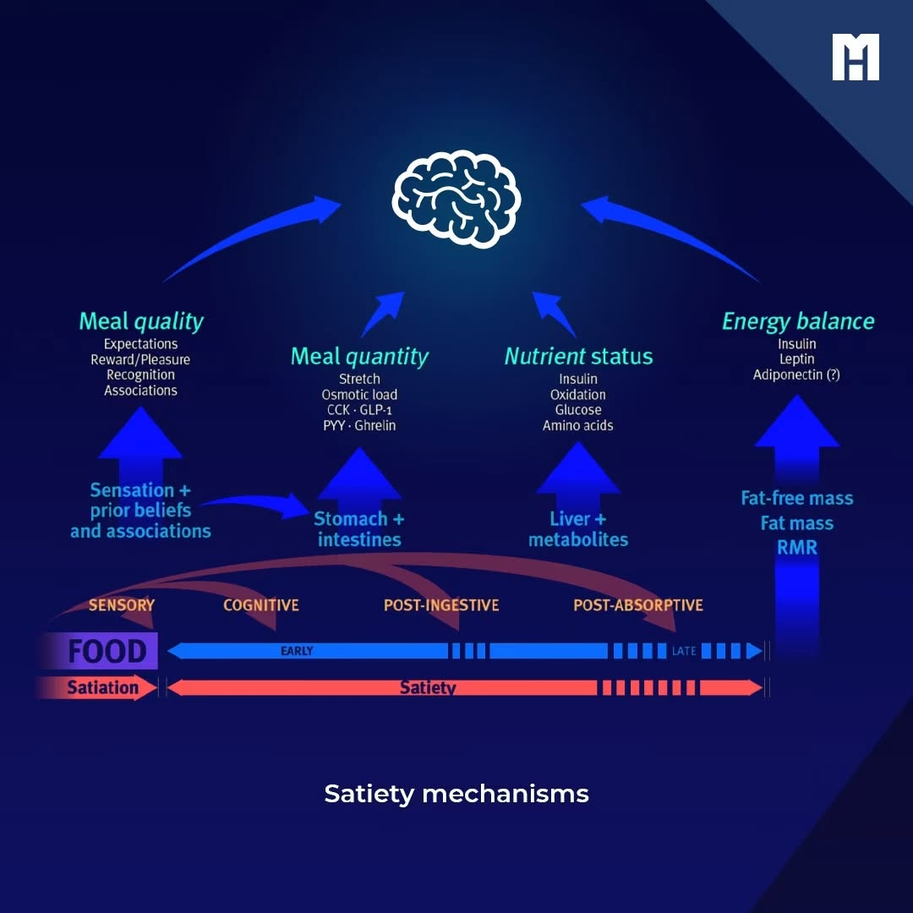
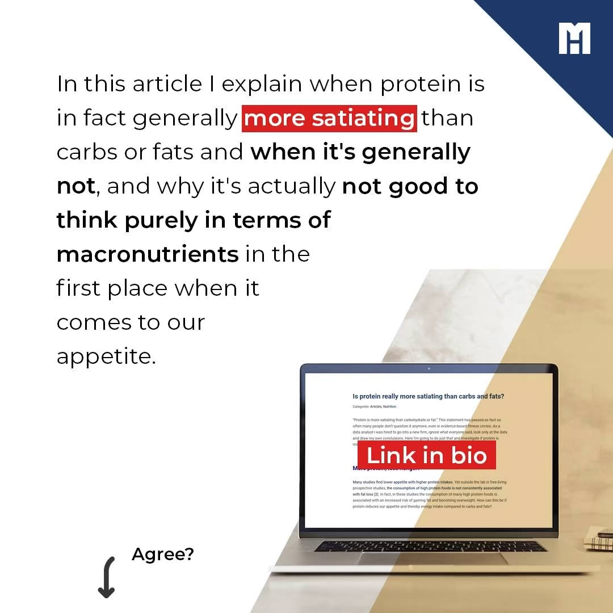
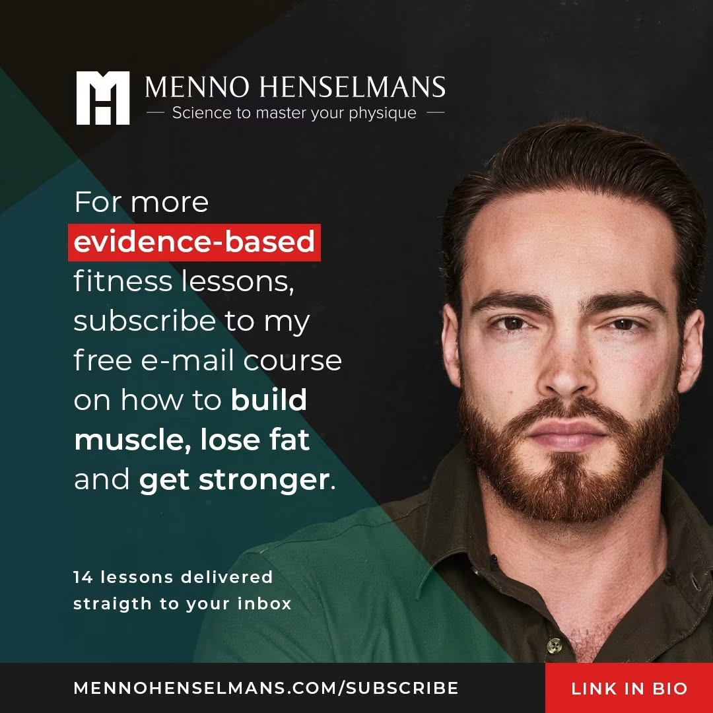

Protein per se is not more satiating than fat or carbohydrate.
This has been rigorously studied in RCT’s and prospective cohort studies— and proven untrue.
In particular, whey protein is proven to have no effect on satiety whatsoever, as compared to a zero-calorie placebo.
The reason that meat is more satiating than other foods is because of how the protein is bound in muscle fiber, and because of the fat. It takes a long time for the human digestive track to break down muscle fiber, which makes you fill full for longer. When protein per se is isolated in a powder and mixed with water, it has no substantial effect on satiety.
facebook.com/share/18Ee95mhQZ
#proteinHD #satietyHD #wheyHD
A common theory is that protein is physically more satiating than carbs or fats.
This would imply that if you're prone to overeat, it's a good idea to increase your protein intake.
A recent study by Oberoi et al. put this idea to the test and investigated the effect of a 30 g whey protein shake on subsequent energy intake during an all-you-can-eat buffet.
The whey shake did not suppress energy intake anymore than a calorie-free control drink.
In another recent meta-analysis of studies on older adults, Ben-Harchache et al. found that extra protein intake generally increased rather than decreased total energy intake compared to control groups.
In longitudinal studies, they found no negative but also no positive effect of higher protein intakes on energy intake.
These data add to the many studies that fail to find effects of protein intake on appetite measures. However, there are still many studies that do find effects of protein on satiety.
In this article I explain when protein is in fact generally more satiating than carbs or fats and when it's generally not, and why it's actually not good to think purely in terms of macronutrients in the first place when it comes to our appetite:
mennohenselmans.comProtein is not more satiating than carbs and fatsmennohenselmans.com
#protein #satiety #mennohenselmans #personaltrainer #personaltrainers #personaltraining #personaltrainerlife #personaltraineronline #personaltraineronline



